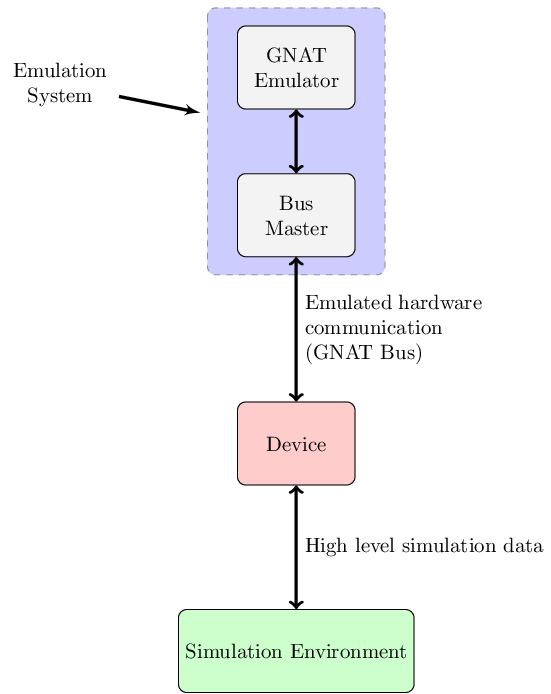

Overview
GNAT Bus is the link between your simulation environment and the emulator. You
can regard GNAT Bus as the simulation of an internal bus (such as AMBA or PCI)
connected to the emulated platform through a bridge.
From the guest-executable point of view, the GNAT Bus devices are just like
any other emulated peripheral.
GNAT Bus is based on operations typical of actual internal
buses :
- Register memory areas mapped to the device
- Perform Read and Write requests
- Serve Read and Write requests
- Trigger interrupts
plus some time-related operations :
- Get simulation time
- Register Event

Tutorial: Create A GNAT Bus Device
To show how to use GNAT Bus, we will define and
emulate a simple UART controller. For simplicity, the
controller will only be able to receive data.
Interface definition
First, we have to define the interface of our device.
The registers implemented in the UART controller are listed in the following
table. The address of each register is defined as an offset to the base address:
UART registers
| Register |
Offset |
|---|
| UART Control |
0x0 |
| UART Data |
0x4 |
The following tables describe the fields of each register:
UART Control register
| Bit number(s) |
Field name |
Reset state |
Access |
Description |
|---|
| 0 |
Enable_Interrupt |
0 |
R/W |
If set an interrupt will be triggered for each character received |
| 1 |
Data_To_Read |
0 |
R |
Set if there is at least one character to read |
| 2 - 31 |
Reserved |
undefined |
|
|
UART Data register
| Bit number(s) |
Field name |
Reset state |
Access |
Description |
|---|
| 0 - 7 |
Data |
0 |
R |
Read received character when Data_To_Read is set, 0 otherwise. |
| 8 - 31 |
Reserved |
undefined |
|
|
Project environment setup
Next, we have to create our project directory tree:
Then we create a project file uart/uart.gpr, with the following
content (see the GPRBuild documentation for detailed information on project
files):
project UART extends "gnatbus_ada.gpr" is
for Languages use ("Ada");
for Source_Dirs use ("src");
for Object_Dir use "obj";
for Exec_Dir use ".";
for Main use ("main.adb");
package Compiler is
for Default_Switches ("Ada") use ("-gnaty", "-gnatwa", "-gnat05");
end Compiler;
package Builder is
for Executable ("main.adb") use "gnatbus_uart";
end Builder;
end UART;
package UART_Controller
uart/src/uart_controller.ads
uart/src/uart_controller.adb
This package implements a UART_Control protected object that contains the
logic of our device (receive characters, manage the FIFO list, set the
Data_To_Read flag, trigger interrupt when needed).
We will not go through the details of the UART_Controller since those are
outside the scope of this tutorial. But you can find sources of this
package in GNAT Emulator‘s examples directory
(<PATH_TO_GNATEMULATOR>/share/examples/gnatemu/gnatbus/uart).
package UART_Device
uart/src/uart.ads
uart/src/uart.adb
To implement our UART device we create a class that inherits from the
Bus_Device abstract class.
type UART_Device (Vendor_Id, Device_Id : Id;
Base_Address : Bus_Address;
Port : Integer)
is new Bus_Device (Vendor_Id, Device_Id, Port) with record
UC : UART_Control;
-- The UART_Control protected object described earlier
end record;
The Vendor_Id, Device_Id and Port discriminants are required by the Bus_Device
abstract type. Base_Address will be used latter as the address of our I/O area.
The device will have to implement six subprograms to provide the required
interface:
- Device_Setup
- Device_Init
- Device_Reset
- Device_Exit
- IO_Read
- IO_Write
Let’s look in detail how these are used by GNAT Bus and how they are
implemented in our UART example.
Device_Setup
overriding procedure Device_Setup (Self : in out UART_Device);
This subprogram has to register the I/O area(s) and perform any other
initialization needed before the device is started.
Body of Device_Setup procedure for UART_Device:
------------------
-- Device_Setup --
------------------
procedure Device_Setup (Self : in out UART_Device) is
begin
Ada.Text_IO.Put_Line ("Device_Setup");
-- Register the only I/O area: 8 bytes at base address to match the two
-- registers.
Self.Register_IO_Memory (Self.Base_Address, 8);
-- Set UART_Device access in the UART_Control protected object
Self.UC.Set_Device (Self'Unchecked_Access);
end Device_Setup;
Device_Init
overriding procedure Device_Init (Self : in out UART_Device);
As implied by its name, this subprogram has to perform device initialization.
It will be called only once, at the beginning of emulation.
In our example there is nothing to do.
Body of Device_Init procedure for UART_Device:
-----------------
-- Device_Init --
-----------------
procedure Device_Init (Self : in out UART_Device) is
pragma Unreferenced (Self);
begin
Ada.Text_IO.Put_Line ("Device_Init");
end Device_Init;
Device_Reset
overriding procedure Device_Reset (Self : in out UART_Device);
This procedure will be called each time a CPU reset occurs in the emulator.
A reset is also triggered at the beginning of emulation (after
Device_Init).
In our example, we have to flush the FIFO queue and set the registers to
their reset value (this is handled by UART_Control).
Body of Device_Reset procedure for UART_Device:
------------------
-- Device_Reset --
------------------
procedure Device_Reset (Self : in out UART_Device) is
begin
Ada.Text_IO.Put_Line ("Device_Reset");
-- Send the reset signal to the UART_Control
Self.UC.Reset;
end Device_Reset;
Device_Exit
overriding procedure Device_Exit (Self : in out UART_Device);
Device_Exit is called one time, at the end of emulation.
In our example there is nothing to do.
Body of Device_Exit procedure for UART_Device:
-----------------
-- Device_Exit --
-----------------
procedure Device_Exit (Self : in out UART_Device) is
pragma Unreferenced (Self);
begin
Ada.Text_IO.Put_Line ("Device_Exit");
end Device_Exit;
IO_Read
overriding procedure IO_Read (Self : in out UART_Device;
Address : Bus_Address;
Length : Bus_Address;
Value : out Bus_Data);
-- Address : Bus_Address
-- Absolute address of the first byte targeted by this read operation.
--
-- Length : Bus_Address
-- Number of bytes targeted by this read operation (1, 2 or 4).
This procedure will be called when the CPU executes a load instruction in any
of the I/O areas registered by the device. The procedure must set Value
according to the specification of the emulated device.
The procedure is usually implemented with a case statement with branches for
each register.
Body of IO_Read procedure for UART_Device:
-------------
-- IO_Read --
-------------
procedure IO_Read (Self : in out UART_Device;
Address : Bus_Address;
Length : Bus_Address;
Value : out Bus_Data) is
pragma Unreferenced (Length);
begin
Ada.Text_IO.Put_Line ("Read @ " & Address'Img);
-- case statement on the relative address
case Address - Self.Base_Address is
when 0 =>
-- Return value of the control register
Value := Self.UC.Get_CTRL;
when 4 =>
-- Pop a byte from FIFO queue
Self.UC.Pop_DATA (Value);
when others =>
Ada.Text_IO.Put_Line ("Read unknown register:" & Address'Img);
Value := 0;
end case;
end IO_Read;
IO_Write
overriding procedure IO_Write (Self : in out UART_Device;
Address : Bus_Address;
Length : Bus_Address;
Value : Bus_Data);
-- Address : Bus_Address
-- Absolute address of the first byte targeted by this write operation.
--
-- Length : Bus_Address
-- Number of bytes targeted by this write operation (1, 2 or 4).
This procedure is the equivalent of Read_IO when store instructions are
executed.
Body of IO_Write procedure for UART_Device:
--------------
-- IO_Write --
--------------
procedure IO_Write (Self : in out UART_Device;
Address : Bus_Address;
Length : Bus_Address;
Value : Bus_Data) is
pragma Unreferenced (Length);
begin
Ada.Text_IO.Put_Line ("Write @ " & Address'Img);
-- case statement on the relative address
case Address - Self.Base_Address is
when 0 =>
-- Set Control register value
Self.UC.Set_CTRL (Value);
when others =>
Ada.Text_IO.Put_Line ("Write unknown register:" & Address'Img);
end case;
end IO_Write;
Main procedure
Finally, we need a main procedure to allocate and start our device.
We also include a loop that sends a message to the UART every second.
with UART; use UART;
with Ada.Text_IO;
procedure Main is
My_UART : UART.UART_Ref;
begin
My_UART := new UART.UART_Device (16#ffff_ffff#, -- Vendor_Id
16#aaaa_aaaa#, -- Device_Id
16#8000_1000#, -- Base Address
8032); -- TCP Port
-- Start the Device loop
My_UART.Start;
-- Now we are ready to receive connection from GNATemulator
Ada.Text_IO.Put_Line ("Start Simulation");
for Cnt in 1 .. 60 loop
My_UART.UC.Put ("Send Message: " & Cnt'Img & ASCII.LF);
delay 1.0;
end loop;
-- Abort the device loop
My_UART.Kill;
end Main;
Note that the device’s TCP port is 8032 and its base address is hexadecimal 80001000.
Compilation
With all the source files prepared (main.adb, uart.adb,
uart.ads, uart_controller.adb and uart_controller.ads) we can build
build the UART device program.
# Add GNATBus's project files directory in ADA_PROJECT_PATH
$ export ADA_PROJECT_PATH=<PATH_TO_GNATEMULATOR>/share/gnatbus/adabinding:$ADA_PROJECT_PATH
# And run gprbuild
$ gprbuild -Puart.gpr
We also have to build the guest executable. To do so, follow the instruction in
<PATH_TO_GNATEMULATOR>/share/examples/gnatemu/gnatbus/uart/guest_code/README.
Device connection and execution
To set up your simulation environment, you first have to start the device
and then in another terminal, start GNAT Emulator with the GNAT Bus switch
and a comma-separated list of “hostname:port” items.
Our device uses port 8032.
$ leon3-elf-gnatemu guest_uart -gnatbus localhost:8032